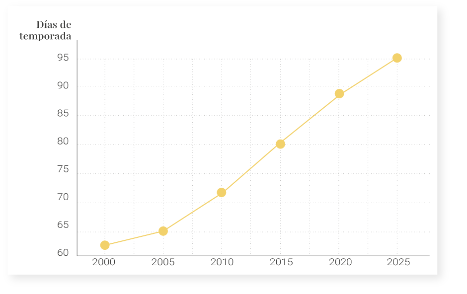
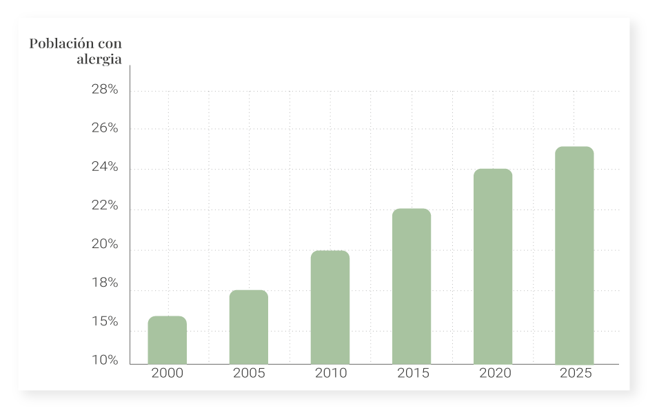
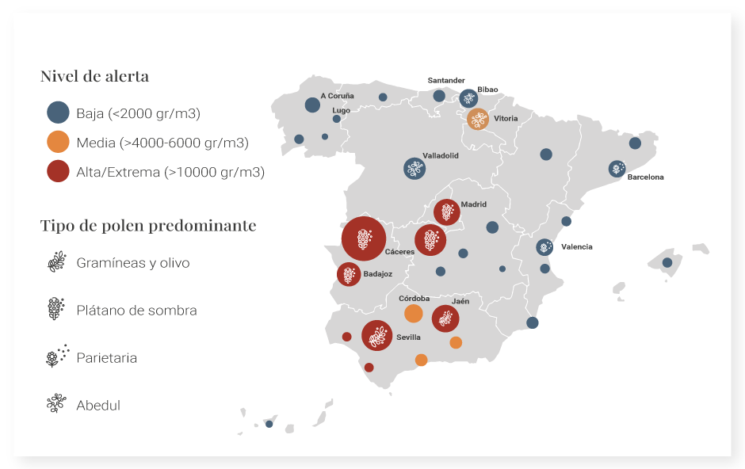

Un fenómeno en expansión

Cada primavera, millones de personas sufren alergia al polen en España. La intensidad y el tipo de polen varían según el territorio, el clima y la vegetación.
Una temporada cada vez más larga
La temporada de polen se alarga cada año

La duración de la temporada de polen ha aumentado en las últimas décadas, impulsada por el incremento de temperaturas y los cambios en los ciclos de floración.

Fuentes: Climate - ADAPT. COPE
El mapa del polen en España

Este mapa permite explorar cómo la distribucióndel polen varía en España según el territorio, el clima y el tipo de vegetación.
El olivo
El olivo (Olea europaea) es el principal motor alérgico del sur peninsular, donde sus extensos monocultivos generan concentraciones de polen extremas durante los meses de mayo y junio. Su impacto clínico es tan elevado que marca el ritmo de vida y la salud pública en provincias como Jaén y Córdoba.
Platano de sombra

El plátano de sombra es uno de los principales responsables de alergias en las ciudades. Durante la primavera libera grandes cantidades de polen.
Mediterráneo. Parietaria

La Parietaria es una de las malezas más persistentes del Mediterráneo, afectando a la población costera durante gran parte del año."
El norte. Abedul

En el norte, especies como el abedul generan polen en primavera, con menor intensidad que en el sur
Gramíneas

El cierzo dispersa el polen de cereales y estepas a gran velocidad. Niveles explosivos en días de viento fuerte.
Más personas afectadas
Las alergias respiratorias han aumentado en las últimas décadas, afectando ya a cerca de una cuarta parte de la población en España.

Fuentes: Elaboración propia a partir de estudios científicos
Conclusión
Territorio, clima y salud
La distribución del polen refleja la relación entre el territorio y la salud. Visualizar estos patrones permite comprender mejor el impacto de factores ambientales en la vida cotidiana.
